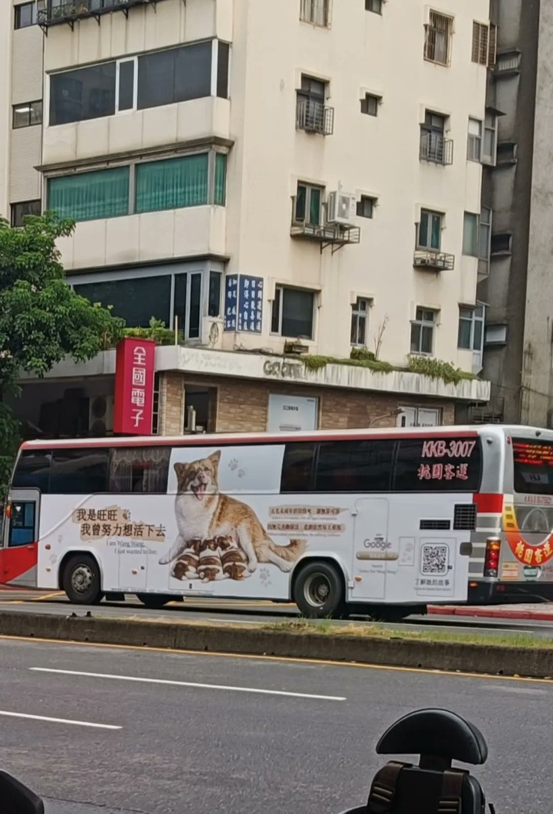
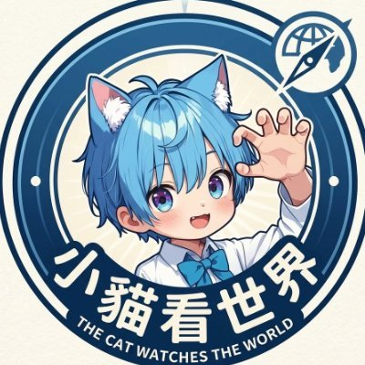

The Raven in the Rain🏳️🌈
@Raincandy_1937
RT @qwert555551ip: 💔 即使澳門巴士上聲援狗媽媽「旺旺」的廣告遭到強制下架，正義與愛心依然不會被抹滅！
讓人欣慰的是，今天在台灣桃園的街道上，公車上的聲援廣告依然在每個角落傳播著。這份對生命的溫柔與堅持，會繼續在台灣發光。✨
邀請大家一起擴散，讓世界看見我…


小貓看世界@子猫は世界を見る
@qwert555551ip
💔 即使澳門巴士上聲援狗媽媽「旺旺」的廣告遭到強制下架，正義與愛心依然不會被抹滅！
讓人欣慰的是，今天在台灣桃園的街道上，公車上的聲援廣告依然在每個角落傳播著。這份對生命的溫柔與堅持，會繼續在台灣發光。✨
邀請大家一起擴散，讓世界看見我們守護動物的決心！
#JusticeForWangWang https://t.co/oN3nAWmwR5 https://t.co/JFt4weHc4l